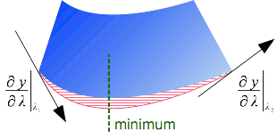
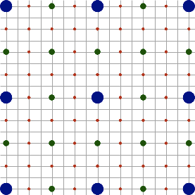

Pour donner une position sur la Terre, on peut utiliser des noms tels que celui d’une ville ou une adresse postale
— on parle alors de références spatiales par identifiants —
ou on peut donner des valeurs numériques valides dans un système de coordonnées donné telles que les latitudes et longitudes
— on parle alors de références spatiales par coordonnées.
Chaque système de référence implique des approximations telles que
le choix de la forme géométrique (géoïde, ellipsoïde, etc.) utilisée comme approximation de la forme de la Terre,
le choix des propriétés géométriques (angles, distances, etc.) à préserver lors de la représentation d’une carte sur une surface plane, et
les pertes de précision lorsque l’on doit transformer des coordonnées vers des systèmes utilisant un référentiel différent.
Une fausse croyance très répandue est que l’on peut éviter cette complexité en choisissant un seul système de référence des coordonnées
(typiquement WGS84) comme système universel pour toutes les données.
Les chapitres suivants expliqueront pourquoi la réalité n’est pas si simple.
Qu’un système universel réponde ou non aux besoins d’une application dépend de la précision désirée,
ainsi que du type de calculs que l’on souhaite effectuer avec les coordonnées.
Sauf indication contraire, Apache SIS tente d’assurer une précision de 1 centimètre pour les coordonnées sur la Terre.
Mais la maîtrise de cette précision nécessite le respect de certaines conditions:
5.1. Composantes d’un système de références par coordonnées
Les systèmes de références spatiales par coordonnées fournissent les informations nécessaires pour faire
correspondre des coordonnées numériques à des positions dans le monde réel. Dans Apache SIS,
ils sont pratiquement tous représentés par des classes dont le nom se termine en CRS
(l’abréviation de Coordinate Reference System en anglais). Ces objets contiennent:
- Un référentiel (datum en anglais),
qui indique entre autres quel ellipsoïde utiliser comme approximation de la forme de la terre.
- Une description de chaque axe (nom, direction, unité de mesure, limites).
- Parfois une liste de paramètres permettant de convertir les coordonnées d’un autre système.
C’est le cas notamment lorsqu’on utilise des projections cartographiques.
Ces systèmes sont décrits par la norme ISO 19111 (Referencing by Coordinates),
qui remplace en grande partie une norme plus ancienne mais encore utilisée pour certains aspects,
OGC 01-009 (Coordinate Transformation Services).
Ces normes sont complétées par deux autres standards définissant des formats d’échanges:
ISO 19136 et 19162 pour respectivement
le Geographic Markup Language (GML) — un format XML précis mais verbeux —
et le Well-Known Text (WKT) — un format texte plus facile à lire par les humains.
5.1.1. Géoïde et ellipsoïde
La surface topographique réelle étant difficile à représenter mathématiquement, elle n’est pas utilisée directement en cartographie.
Une autre surface un peu plus facilement utilisable est le géoïde,
une surface sur laquelle la force gravitationnelle a partout la même valeur (surface équipotentielle du champ de gravité terrestre).
Cette surface est en tout point perpendiculaire à la direction indiquée par un fil à plomb (verticale du lieu).
Le géoïde coïnciderait avec le niveau moyen des mers s’il n’y avait ni vent ni courants marins permanents comme le Gulf Stream.
Tout en étant nettement plus lisse que la surface topographique,
le géoïde présente des creux et des bosses liés à l’inégale distribution des masses de la Terre.
Pour une utilisation mathématiquement plus aisée, le géoïde est donc approximé par un ellipsoïde.
Cette « figure de la Terre » est représentée dans GeoAPI par l’interface Ellipsoid,
qui constitue un élément fondamental des systèmes de références de type GeographicCRS et ProjectedCRS.
Plusieurs dizaines d’ellipsoïdes sont couramment employés pour la définition de référentiels.
Certains offrent une excellente approximation pour une région précise
au détriment des régions pour lesquelles le référentiel n’a pas été conçu,
et d’autres offrant un compromis pour l’ensemble de la planète.
Exemple:
la base de données géodétiques EPSG définit entre autres les ellipsoïdes « WGS 84 », « Clarke 1866 », « Clarke 1880 »,
« GRS 1980 » and « GRS 1980 Authalic Sphere » (une sphère de même surface que l’ellipsoïde GRS 1980).
Un ellipsoïde peut être utilisé en divers endroits de la planète ou peut être très spécifique à une région précise.
Par exemple au début du XXe siècle aux États-Unis, l’état du Michigan utilisait pour ses cartes un ellipsoïde basé
sur l’ellipsoïde « Clarke 1866 » mais auquel la longueur des axes a été allongée de 800 pieds.
Cette modification visait à tenir compte du niveau moyen de l’état au dessus du niveau de la mer.
5.1.2. Référentiel géodésique
Pour définir un système géodésique dans un pays, l’état met en place un ellipsoïde de référence
qui épouse au mieux sur l’ensemble du pays la forme locale du géoïde.
L’écart entre cet ellipsoïde de référence et les creux et les bosses du géoïde reste généralement inférieur à 100 mètres.
Les paramètres qui permettent de lier un Ellipsoid à la surface de la Terre (par exemple la position de son centre)
sont représentées par un objet de type GeodeticDatum, que l’on traduit en français par « référentiel géodésique ».
Plusieurs GeodeticDatum peuvent utiliser le même Ellipsoid, mais centré ou orienté différemment.
Avant l’avènement des satellites, les mesures géodésiques se déroulaient exclusivement à la surface de la terre.
En conséquence, deux îles ou continents qui ne sont pas à portée visuelle l’un de l’autre n’étaient pas rattachés géodésiquement entre eux.
Ainsi les référentiels North American Datum 1983 (NAD83) et
European Datum 1950 (ED50) sont indépendants l’un de l’autre:
leurs ellipsoïdes de référence ont des centres distincts et des dimensions différentes.
Une même coordonnée géographique correspondra à des positions différentes dans le monde réel
selon que la coordonnée se réfère à l’un ou l’autre de ces référentiels.
L’invention du GPS a précipité la création d’un système géodésique mondial,
nommé WGS84.
L’ellipsoïde de référence est alors unique et centré au centre de gravité de la terre.
Les GPS donnent à tout moment la position absolue du récepteur rapportée à ce système géodésique.
Mais WGS84 étant un système mondial, il peut diverger significativement des systèmes locaux.
Par exemple l’écart entre WGS84 et le système européen ED50 est de l’ordre de 150 mètres,
et l’écart moyen par rapport au système de l’île de la Réunion 1947 est de 1,5 kilomètres.
Il ne faut donc pas rapporter aveuglement des positions GPS sur une carte.
Des correspondances avec les systèmes régionaux peuvent être nécessaires
et sont représentées dans GeoAPI sous forme d’objets de type Transformation.
Les généralisation de l’usage du système WGS84 tend à réduire le besoin d’utiliser
les objets Transformation pour les données récentes, mais ne l’élimine pas complètement.
La Terre bouge sous l’effet de la tectonique des plaques et de nouveaux systèmes sont définis chaque année pour en tenir compte.
Par exemple bien que le référentiel NAD83 a été défini à l’origine comme pratiquement équivalent à WGS84,
il existe maintenant (en 2016) un écart d’environ 1.5 mètres entre ces deux systèmes.
Le référentiel Japanese Geodetic Datum 2000 était aussi défini comme pratiquement équivalent à WGS84,
mais le nouveau référentiel Japanese Geodetic Datum 2011 s’en écarte.
Le référentiel WGS84 lui-même, sensé correspondre à une définition à un instant donné,
a subit des révisions dues notamment à l’amélioration de la précision des instruments.
Ainsi il existe aujourd’hui au moins six versions de WGS84.
En outre beaucoups de bordures ont été définies légalement dans des référentiels plus anciens, par exemple NAD27 aux États-Unis.
Mettre à jour dans un nouveau référentiel peut obliger à transformer des lignes droites ou des formes géométriques simples en des formes plus irrégulières
si on ne veut pas que des parcelles de terrain changent de propriétaire.
5.1.3. Systèmes de coordonnées
TODO
5.1.3.1. Ordre des axes
L’ordre des axes est spécifié par l’autorité (typiquement une agence nationale) qui définit le
système de référence des coordonnées (CRS).
L’ordre dépend du type de CRS ainsi que du pays qui l’a définit.
Dans le cas des CRS de type géographique,
l’ordre (latitude, longitude) est utilisé par les géographes et les pilotes depuis des siècles.
Toutefois des développeurs de logiciels tendent à préférer l’ordre (x, y) pour tous systèmes de coordonnées.
Ces différentes pratiques entraînent des définitions contradictoires de l’ordre des axes pour pratiquement tous les CRS
de type GeographicCRS, pour certains ProjectedCRS dans l’hémisphère sud (Afrique du Sud, Australie, etc.)
et pour certaines projections polaires entre autres.
Les standards OGC récents demandent d’ordonner les axes tel que spécifié par l’autorité qui a définit le CRS.
Mais des standards OGC plus anciens utilisaient l’ordre (x, y) inconditionnellement,
en ignorant les spécifications des autorités sur ce point.
Beaucoup de logiciels continuent d’utiliser cet ordre (x, y),
peut-être parce qu’une telle uniformisation rend l’implémentation et l’utilisation des CRS en apparence plus simple.
Apache SIS supporte les deux conventions avec l’approche suivante:
par défaut, SIS construit les CRS avec les axes dans l’ordre définit par l’autorité.
Ces CRS sont construits par des appels à la méthode CRS.forCode(String),
et l’ordre des axes effectif peut être vérifié après la création du CRS par un appel à System.out.println(crs).
Mais si l’ordre (x, y) est désiré pour des raisons de compatibilité avec d’anciens standards OGC ou avec d’autres logiciels,
alors les CRS peuvent être modifiés de manière à avoir la longitude en premier avec un appel à la méthode suivante:
CoordinateReferenceSystem crs = …; crs = AbstractCRS.castOrCopy(crs).forConvention(AxesConvention.RIGHT_HANDED)
Parmi les anciens standards de l’OGC qui utilisaient un ordre des axes non-conforme,
un standard influent était la version 1 du format Well Known Text (WKT).
D’après ce format largement utilisé, les définitions WKT 1 sans éléments AXIS[…] explicites
doivent être interprétés comme ayant ses axes dans l’ordre (longitude, latitude) ou (x, y).
Dans la version 2 du format WKT, les éléments AXIS[…] ne sont plus optionnel
et devrait contenir explicitement un sous-élément ORDER[…] pour rendre l’ordre voulu encore plus évident.
Mais si les éléments AXIS[…] sont malgré tout omis dans une définition WKT 2,
alors Apache SIS utilise l’ordre (latitude, longitude) par défaut.
Pour résumer:
- L’ordre par défaut d’un CRS géographique en WKT 1 est (longitude, latitude) tel que spécifié par le standard OGC 01-009.
- L’ordre par défaut d’un CRS géographique en WKT 2 est (latitude, longitude), mais c’est une interprétation spécifique de SIS
vu que la norme ISO 19162 ne mentionne pas de comportement par défaut.
Pour éviter des ambiguïtés, les utilisateurs sont encouragés à toujours fournir explicitement les éléments AXIS[…] dans leurs WKT.
Le format WKT sera présenté plus en détails dans les sections suivantes.
5.1.4. Systèmes géographiques
TODO
5.1.4.1. Format Well-Known Text
TODO
5.1.5. Projections cartographiques
Les projections cartographiques représentent une surface courbe (la Terre) sur une surface plane (une carte ou un écran d’ordinateur)
en contrôlant les déformations: on peut préserver les angles ou les surfaces, mais pas les deux à la fois.
Les propriétés géométriques à conserver dépendent de l’objet d’étude et du travail à effectuer.
Par exemple les pays plutôt allongés dans le sens Est-Ouest utilisent souvent une projection de Lambert,
alors que les pays plutôt allongés dans le sens Nord-Sud préfèrent une projection de Mercator Transverse.
TODO
5.1.5.1. Format Well-Known Text
TODO
5.1.6. Dimensions verticales et temporelles
TODO
5.1.6.1. Format Well-Known Text
TODO
5.3. Opérations sur les coordonnées
Étant donné un système de référence des coordonnées (CRS) source selon lequel sont exprimés des coordonnées existantes
et un système de référence des coordonnées destination selon lequel les coordonnées sont désirées,
Apache SIS peut fournir une opération sur les coordonnées qui effectuera le travail de conversion ou de transformation.
La recherche d’une opération peut utiliser un troisième argument, optionnel mais recommandé: la région géographique des données à transformer.
Ce dernier argument est recommandé parce que les opérations sur les coordonnées sont souvent valides seulement dans une région géographique
(typiquement un pays ou une province particulière), et plusieurs transformations peuvent exister pour la même paire de CRS
source et destination mais avec des domaines de validité différents.
Il peut aussi y avoir des différentes transformations qui sont différents compromis entre la précision et le domaine de validité,
de sorte que spécifier à Apache SIS qu’on s’intéresse à une région plus petite
peut lui permettre de sélectionner une opération plus précise.
Exemple:
la base de données géodésiques EPSG (dans sa version 7.9) définit 77 opérations sur les coordonnées
allant du système géographique North American Datum 1927 (EPSG:4267)
vers le système World Geodetic System 1984 (EPSG:4326).
Il y a une opération valide seulement pour la transformation de coordonnées au Québec,
une autre opération valide pour la transformation de coordonnées au Texas mais à l’ouest de 100°W,
une autre opération pour le même état mais à l’est de 100°W, etc.
Si l’utilisateur ne spécifie pas la région géographique qui l’intéresse,
alors le comportement par défaut de Apache SIS est de sélectionner l’opération valide dans la plus grande région géographique.
Dans cet exemple, ce critère entraîne la sélection d’une opération valide pour le Canada, mais qui n’est pas valide pour les États-Unis.
La façon la plus facile d’obtenir une opération sur les coordonnées à partir des informations présentées ci-dessus
est d’utiliser la classe de commodité org.apache.sis.referencing.CRS:
CoordinateOperation cop = CRS.findOperation(sourceCRS, targetCRS, areaOfInterest);
Parmi les information fournies par l’objet CoordinateOperation obtenu, on note en particulier:
- Le domaine de validité, soit comme une description textuelle telle que « Canada – onshore and offshore »
ou comme les coordonnées géographiques d’une boîte englobante.
- La précision, qui peut être n’importe quoi entre 1 centimètre et quelques kilomètres.
- Le sous-type de l’opération sur les coordonnées. Parmi les sous-types possibles,
deux offrent les mêmes fonctionnalités mais avec une différence conceptuelle notable:
-
Les conversions de coordonnées sont entièrement définies par une formule mathématique.
Les conversions s’effectueraient avec une précision infinie s’il n’y avait pas les inévitables
erreurs d’arrondissements inhérents aux calculs sur des nombres réels.
Les projections cartographiques entrent dans cette catégorie.
-
Les transformations de coordonnées sont définies de manière empirique.
Elles ont souvent des erreurs de quelques mètres qui ne sont pas dues à des limites de la précision des ordinateurs.
Ces erreurs découlent du fait que la transformation utilisée n’est qu’une approximation d’une réalité plus complexe.
Les changements de référentiels tel que le passage de la
Nouvelle Triangulation Française (NTF) vers le
Réseau Géodésique Français 1993 (RGF93) entrent dans cette catégorie.
Lorsque l’opération sur les coordonnées est une instance de Transformation,
il est possible que l’instance choisie par SIS ne soit qu’une parmi plusieurs possibilités en fonction de la région d’intérêt.
En outre, sa précision sera certainement moindre que la précision centimétrique que l’on peut attendre d’une Conversion.
Vérifier la zone de validité ainsi que la précision déclarées dans les méta-données de la transformation prend alors une importance particulière.
L’objet CoordinateOperation introduit dans la section précédente fournit des informations de haut-niveau
(CRS source et destination, zone de validité, précision, paramètres de l’opération, etc).
Le travail mathématique réel est effectué par un objet séparé, obtenu par un appel à CoordinateOperation.getMathTransform().
Contrairement aux instances de CoordinateOperation, les instances de MathTransform ne contiennent aucune méta-données.
Elles sont une sorte de boîte noire qui ignore tout des CRS source et destination
(en fait la même instance de MathTransform peut être utilisée pour différentes paires de CRS si le travail mathématique est le même).
En outre une instance de MathTransform peut être implémentée d’une manière très différente à ce que CoordinateOperation dit.
En particulier, plusieurs opérations conceptuellement différentes (par exemple rotations de la longitude,
changements d’unités de mesure, conversions entre deux projections de Mercator qui utilisent le même référentiel, etc.)
sont implémentées par MathTransform comme des transformations affines
et concaténées pour des raisons d’efficacité, même si CoordinateOperation les affiche comme une chaîne d’opérations telles que la projection de Mercator.
La section « chaîne d’opération conceptuelle versus réelle » explique plus en détails les différences.
Le code Java suivant effectue une projection cartographique à partir de coordonnées géographiques selon le référentiel
World Geodetic System 1984 (WGS84) vers des coordonnées selon le système WGS 84 / UTM zone 33N.
Afin de rendre l’exemple un peu plus simple, ce code utilise des constantes pré-définies dans la classe de commodité CommonCRS.
Mais des applications plus avancées voudront souvent utiliser des codes EPSG plutôt.
Notons que toutes les coordonnées géographiques dans ce code ont la latitude avant la longitude.
import org.opengis.geometry.DirectPosition;
import org.opengis.referencing.crs.CoordinateReferenceSystem;
import org.opengis.referencing.operation.CoordinateOperation;
import org.opengis.referencing.operation.TransformException;
import org.opengis.util.FactoryException;
import org.apache.sis.referencing.CRS;
import org.apache.sis.referencing.CommonCRS;
import org.apache.sis.geometry.DirectPosition2D;
public class MyApp {
public static void main(String[] args) throws FactoryException, TransformException {
CoordinateReferenceSystem sourceCRS = CommonCRS.WGS84.geographic();
CoordinateReferenceSystem targetCRS = CommonCRS.WGS84.UTM(40, 14); CoordinateOperation operation = CRS.findOperation(sourceCRS, targetCRS, null);
DirectPosition ptSrc = new DirectPosition2D(40, 14); DirectPosition ptDst = operation.getMathTransform().transform(ptSrc, null);
System.out.println("Source: " + ptSrc);
System.out.println("Target: " + ptDst);
}
}
La section précédente indiquait comment projeter les coordonnées d’un système de référence vers un autre.
Mais il existe une autre opération moins connue, qui consiste à calculer non pas la coordonnée projetée d’un point,
mais plutôt la dérivée de la fonction de projection cartographique en ce point.
Cette opération était définie dans une ancienne spécification du consortium Open Geospatial,
OGC 01-009, aujourd’hui un peu oubliée mais pourtant encore utile.
Appelons P une projection cartographique qui convertit une latitude et longitude (φ, λ) en degrés
vers une coordonnée projetée (x, y) en mètres.
Dans l’expression ci-dessous, nous représentons le résultat de la projection cartographique
sous forme d’une matrice colonne (la raison sera plus claire bientôt):
Équation
Code Java
DirectPosition geographic = new DirectPosition2D(φ, λ);
DirectPosition projected = P.transform(geographic, null);
double x = projected.getOrdinate(0);
double y = projected.getOrdinate(1);
La dérivée de la projection cartographique en ce même point peut se représenter par une matrice Jacobienne:
Équation
Code Java
DirectPosition geographic = new DirectPosition2D(φ, λ);
Matrix jacobian = P.derivative(geographic);
double dx_dλ = jacobian.getElement(0,1);
double dy_dφ = jacobian.getElement(1,0);
Les équations suivantes dans cette section abrégeront
∂x(φ, λ) par ∂x ainsi que
∂y(φ, λ) par ∂y,
mais il faut garder à l’esprit que chacune de ces valeurs dépendent de la coordonnée (φ, λ) donnée au moment du calcul de la matrice Jacobienne.
La première colonne de la matrice nous dit que si l’on effectue un petit déplacement de ∂φ degrés de latitude
à partir de la position (φ, λ)
— c’est-à-dire si on se déplace à la position geographique (φ + ∂φ, λ) —
alors la coordonnée projetée subira un déplacement de (∂x, ∂λ) metres
— c’est-à-dire qu’elle deviendra (x + ∂x, y + ∂λ).
De même la dernière colonne de la matrice nous indique quel sera le déplacement que subira la coordonnée projetée
si on effectue un petit déplacement de ∂λ degrés de longitude de la coordonnée géographique source.
On peut se représenter visuellement ces déplacements comme ci-dessous.
Cette figure représente la dérivée en deux points, P1 et P2,
pour mieux illustrer le fait que le résultat varie en chaque point.
Dans cette figure, les vecteurs U et V désignent respectivement
la première et deuxième colonne des matrices Jacobiennes.
où les vecteurs sont reliés à la matrice par:
Cette figure nous montre déjà une utilisation possible des dérivées:
elles donnent la direction des parallèles et des méridiens à une position donnée dans une projection cartographique.
Par extension, on peut aussi s’en servir pour déterminer si des axes sont interchangés,
ou si la direction d’un axe est renversée. Mais l’intérêt des dérivées ne s’arrête pas là.
5.3.2.1. Utilité des dérivées pour la reprojection d’enveloppes
Les systèmes d’information géographiques ont très fréquemment besoin de projeter une enveloppe.
Mais l’approche naïve, qui consisterait à projeter chacun des 4 coins du rectangle, ne suffit pas.
La figure ci-dessous montre une enveloppe avant le projection, et la forme géométrique que l’on obtiendrait
si on projetait finement l’enveloppe (pas seulement les 4 coins). Cette forme géométrique est plus complexe
qu’un simple rectangle à cause des courbures induites par la projection cartographique.
Construire une enveloppe rectangulaire qui engloberait les 4 coins de cette forme géométrique ne suffit pas,
car la surface en bas de la forme est plus basse que les 2 coins du bas.
Cette surface serait donc en dehors du rectangle.
Enveloppe avant la projection

Forme géométrique après la projection

Une façon simple d’atténuer le problème est d’échantillonner un plus grand nombre de points sur chacun des
bords de la forme géométrique. On trouve ainsi des bibliothèques de SIG qui vont par exemple
échantillonner 40 points sur chaque bord, et construire un rectangle qui englobe tout ces points.
Mais même avec 40 points, les échantillons les plus proches peuvent encore être légèrement à côté du point le plus bas de la figure.
Une petite portion de la forme géométrique peut donc toujours se trouver en dehors du rectangle.
Il est tentant de considérer cette légère erreur comme négligeable, mais quelques pixels manquants
entraînent divers artefacts comme une apparence de quadrillage lors de l’affichage d’images tuilées,
ou une “pointe de tarte” manquante lors de la projection d’images sur un pôle.
Augmenter artificiellement d’un certain pourcentage la taille de l’enveloppe projetée peut éliminer ces artefacts dans certains cas.
Mais un pourcentage trop élevé fera traiter plus de données que nécessaire
(en particulier lorsque cela entraîne le chargement de nouvelles tuiles d’images),
alors qu’un pourcentage trop faible laissera quelques artefacts.
Les dérivées des projections cartographiques permettent de résoudre ce problème d’une manière plus efficace que la force brute.
La figure ci-dessous reprend la forme projetée en exagérant des déformations.
L’approche consiste à calculer la projection cartographiques des 4 coins comme dans l’approche naïve,
mais en récupérant aussi les dérivées de la projection de ces 4 coins.
Entre deux coins et avec leurs dérivées, on peut faire passer une et une seule courbe cubique
(de la forme f(x) = C₀ + C₁x + C₂x² + C₃x³),
dont on peut calculer les coefficients C.
Cette approximation (représentée en rouge ci-dessous) ne correspond pas tout-à-fait à la courbe désirée (en bleue) mais s’en rapproche.
Ce qui nous intéresse n’est pas vraiment les valeurs de l’approximation, mais plutôt la position de son minimum,
en particulier la longitude λ où se trouve ce minimum dans notre exemple (ligne pointillée verte).
L’avantage est que la position du minimum d’une courbe cubique est facile à calculer lorsque l’on connaît les valeurs de C.
En supposant que la longitude du minimum de la courbe cubique est proche de la longitude du minimum de la courbe réelle,
il suffit de calculer la projection cartographique d’un point à cette longitude plutôt que d’échantillonner 40 points sur le bord de l’enveloppe.

Légende:
- En bleue: la forme géométrique correspondant à la projection de l’enveloppe.
C’est la forme dont on souhaite avoir le rectangle englobant.
- En rouge (sous les hachures): L’approximation
y = C₀ + C₁λ + C₂λ² + C₃λ³.
- En vert (pointillés): La position λm du minimum de l’approximation, trouvée en résolvant
0 = C₁ + 2C₂λm + 3C₃λm².
Il peut y avoir jusqu’à deux minimums pour une même courbe cubique.
Dans la pratique Apache SIS utilise 8 points, soit les 4 coins plus un point au centre de chaque bord du rectangle à projeter,
afin de réduire le risque d’erreur qu’induirait une courbe trop tordue entre deux points.
Selon nos tests, l’utilisation de ces seuls 8 points avec leurs dérivées comme décrit ci-haut
donne un résultat plus précis que l’approche « force brute » utilisant un échantillonnage de 160 points sur les 4 bords du rectangle.
La précision de SIS pourrait être encore améliorée en répétant le processus à partir du minimum trouvée
(une ou deux itérations suffiraient peut-être).
Une économie de 150 points n’est pas énorme vu les performances des ordinateurs d’aujourd’hui.
Mais toute la discussion précédente utilisait une forme géométrique à deux dimensions en guise d’exemple,
alors que l’algorithme est applicable dans un espace à n dimensions.
Et de fait, l’implémentation de Apache SIS fonctionne pour un nombre arbitraire de dimensions.
Les économies apportées par cet algorithme par rapport à la force brute augmentent de manière exponentielle avec le nombre de dimensions.
L’approche décrite dans cette section est implémentée dans Apache SIS
par la méthode statique Envelopes.transform(CoordinateOperation, Envelope).
Une méthode Envelopes.transform(MathTransform, Envelope) existe aussi comme alternative,
mais cette dernière ne devrait être utilisée que si on ne connaît pas l’objet CoordinateOperation utilisé.
La raison est que les objets de type MathTransform ne contiennent pas d’information sur le système de coordonnées sous-jasent,
ce qui empêche la méthode Envelopes.transform(…) de savoir comment gérer les points aux pôles.
5.3.2.2. Utilité des dérivées pour la reprojection d’images
La projection cartographique d’une image s’effectue en préparant une image initialement vide qui contiendra le résultat de l’opération,
puis à remplir cette image en itérant sur tous les pixels. Pour chaque pixel de l’image destination, on obtient la coordonnées
du pixel correspondant dans l’image source en utilisant l’inverse de la projection cartographique que l’on souhaite appliquer.
La position obtenue ne sera pas nécessairement au centre du pixel de l’image source, ce qui implique qu’une interpolation de la valeur
(ou de la couleur dans l’image ci-dessous) peut être nécessaire.
Image source
Image destination

Toutefois, calculer la projection inverse pour chacun des pixels peut être relativement lent.
Afin d’accélérer les calculs, on utilise parfois une grille d’interpolation
dans laquelle on a pré-calculé les coordonnées de la projection inverse de seulement quelques points.
Les coordonnées des autres points se calculent alors par des interpolations bilinéaires entre les points pré-calculés,
calculs qui pourraient éventuellement tirer parti d’accélérations matérielles sous forme de transformations affines.
Cette approche est implémentée par exemple dans la bibliothèque Java Advanced Imaging avec l’objet WarpGrid.
Elle offre en outre l’avantage de permettre de réutiliser la grille autant de fois que l’on veut si on a plusieurs images de même
taille à projeter aux mêmes coordonnées géographiques.
Mais une difficulté de cette approche est de déterminer combien de points il faut pré-calculer pour que l’erreur
(la différence entre une position interpolée et la position réelle) ne dépasse pas un certain seuil (par exemple ¼ de pixel).
On peut procéder en commençant par une grille de taille 3×3, puis en augmentant le nombre de points de manière itérative:

Légende:
- Points bleus: première itération (9 points).
- Points verts: seconde itération (25 points, dont 16 nouveaux).
- Points rouges: troisième itération (81 points, dont 56 nouveaux).
Si l’on continue…
- Quatrième itération: 289 points, dont 208 nouveaux.
- Cinquième itération: 1089 points, dont 800 nouveaux.
- Sixième itération: 4225 points, dont 3136 nouveaux.
- …
L’itération s’arrête lorsque, après avoir calculé de nouveaux points, on a vérifié que la différence entre les
coordonnées projetées et les coordonnées interpolées de ces nouveaux points est inférieure au seuil qu’on s’est fixé.
Malheureusement cette approche nous permet seulement de déterminer après avoir calculé de nouveaux points…
que ce n’était pas la peine de les calculer. C’est un peu dommage vu que le nombre de nouveaux points requis par chaque itération
est environ 3 fois la somme du nombre de nouveaux points de toutes les itérations précédentes.
Les dérivées des projections cartographiques nous permettent d’améliorer cette situation en estimant
si c’est la peine d’effectuer une nouvelle itération avant de la faire.
L’idée de base est de vérifier si les dérivées de deux points voisins sont presque pareilles,
auquel cas on présumera que la transformation entre ces deux points est pratiquement linéaire.
Pour quantifier « presque pareil », on procède en calculant l’intersection entre les tangentes aux deux points
(une information fournie par les dérivées), et en calculant la distance entre cette intersection et la droite
qui relie les deux points (la ligne pointillée dans la figure ci-dessous).

Dans l’approche sans dérivées, l’itération s’arrête lorsque la distance entre la ligne pointillée (positions interpolées)
et la ligne rouge (positions projetées) est inférieure au seuil de tolérance, ce qui implique de calculer la position projetée.
Dans l’approche avec dérivées, on remplace la position projetée par l’intersection des deux tangentes (carré bleu foncé).
Si la courbe n’est pas trop tordue – ce qui ne devrait pas être le cas entre deux points suffisamment proches –
la courbe réelle passera à quelque part entre la droite pointillée et l’intersection.
On s’évite ainsi des projections cartographiques, en apparence une seule dans cette illustration,
mais en fait beaucoup plus dans une grille de transformation d’image (3× la somme des itérations précédentes).
5.3.2.3. Obtention de la dérivée en un point
Cette discussion n’aurait pas un grand intérêt si le coût du calcul des dérivées des projections cartographiques
était élevé par rapport aux coût de la projection des points. Mais lorsque l’on dérive analytiquement les équations
des projections, on constate que les calculs des positions et de leurs dérivées ont souvent plusieurs termes en commun.
En outre le calcul des dérivées est simplifié lorsque le code Java effectuant les projections ne se concentre que sur le « noyau » non-linéaire,
après s’être déchargé des parties linéaires en les déléguant aux transformations affines comme le fait SIS.
Les implémentations des projections cartographiques dans Apache SIS tirent parti de ces propriétés
en ne calculant les dérivées que si elles sont demandées,
et en offrant une méthode qui permet de projeter un point et obtenir sa dérivée en une seule opération
afin de permettre à SIS de réutiliser un maximum de termes communs.
Exemple:
AbstractMathTransform projection = ...; double[] sourcePoint = {longitude, latitude}; double[] targetPoint = new double[2]; Matrix derivative = projection.transform(sourcePoint, 0, targetPoint, 0, true);
Si seule la matrice Jacobienne est désirée (sans la projection du point), alors la méthode
MathTransform.derivative(DirectPosition) offre une alternative plus lisible.
Apache SIS est capable combiner les dérivées des projections cartographiques de la même façon que pour les projections de coordonnées:
concaténation d’une chaîne de transformations, inversion, opérer sur un sous-ensemble des dimensions, etc.
Les opérations inverses (des systèmes projetés vers géographiques)
sont souvent beaucoup plus compliquées à implémenter que les opérations originales (des systèmes géographiques vers projetés),
mais par chance la matrice Jacobienne d’une fonction inverse est simplement l’inverse de la matrice Jacobienne de la fonction originale.
Une fonction inverse peut donc implémenter le calcul de sa dérivée comme suit:
@Override
public Matrix derivative(DirectPosition p) throws TransformException {
Matrix jac = inverse().derivative(transform(p));
return Matrices.inverse(jac);
}